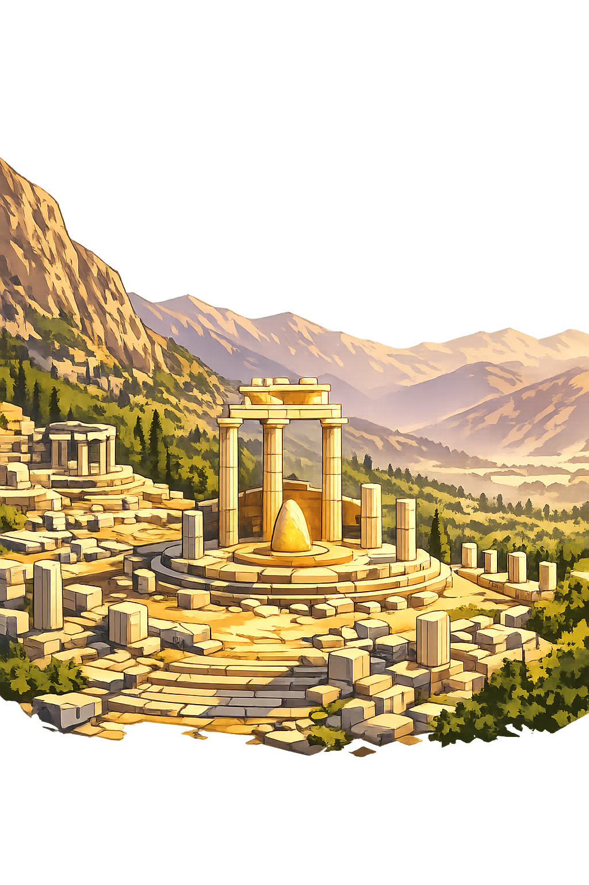

The Authentic Orthography
The Oracle · Navel of the World · Apollo's Sanctuary

Why delphoí.com is the correct form
Δελφοί
The name in its original Greek form. A plural toponym derived from δελφύς (delphys), meaning "womb." Delphi was considered the omphalos — the navel — of the world, the point where the earth's creative force converged. The acute accent on the final iota marks the stress of the word in ancient pronunciation.
DELPHOI
Stripped of its Greek identity, the name was reduced to seven Latin letters. Tourist agencies claimed it. Software packages named themselves after it. The sacred stress — the very pitch that distinguished this word in the mouths of the Pythia — was erased by systems that only understand A–Z.
Delphoí
The acute accent on the final iota restores the stress and dignity of the name. This is not decoration — it is philological accuracy. The domain encodes to Punycode, but the browser displays the truth: this is not the English "Delphoi." This is the Greek Delphoí.
delphoí.com → xn--delpho-8va.com
The non-ASCII character í (U+00ED) is encoded while the ASCII remains visible. To the DNS, it is Punycode. To humanity, it is Delphoí.
How the oracle was truly spoken
Where the gods spoke through mortal lips
Delphi was not merely a temple. It was the center of the Greek world — the omphalos, the navel stone around which all of Hellas oriented itself. For over a thousand years, kings, generals, and common people journeyed to this remote spot on the slopes of Mount Parnassus to hear the voice of Apollo speak through his priestess, the Pythia. Her words, ambiguous and prophetic, shaped the destiny of cities and empires.
Built and rebuilt seven times over the centuries. The temple housed the inner sanctum — the adýton — where the Pythia sat on her tripod and delivered the god's responses. Its ruins still command the mountainside.
The oracle priestess, an older woman of Delphi who spoke for Apollo. Seated on a tripod over a fissure in the earth, she entered a trance and delivered prophecies in verse — interpreted by male priests into hexameter.
The three-legged seat upon which the Pythia sat, bridging the human and divine realms. The tripod was sacred to Apollo and became the symbol of prophecy itself — and of the Pythian Games.
The sacred spring where all who approached the oracle purified themselves. Pausanias wrote that its waters were essential to the rites. Poets drank from it for inspiration; petitioners washed for blessing.
Stories of prophecy, power, and divine voice
Before Apollo, Delphi belonged to Python — a monstrous she-dragon who guarded the sacred chasm. The young god, son of Zeus and Leto, tracked the beast to Mount Parnassus and slew her with his silver bow. From her body, the oracle's power flowed into the earth itself. But Apollo did not escape unpunished: he was forced into exile for eight years, serving Admetus as a herdsman, to atone for the blood of a child of Gaia. When he returned, he took the name Pythios — the Python-slayer — and established his oracle upon the very spot where the dragon had fallen.
Apollo chose the Pythia to be his voice — a woman of Delphi, past middle age, who would sit upon the tripod and inhale the vapors rising from the chasm. The priestess entered a trance, and the god spoke through her. Her utterances were translated by the prophētai — male priests who shaped her wild words into hexameter verse. The system endured for centuries because it worked: the ambiguity of prophecy meant that it could never be proven wrong, only differently understood.
Croesus, king of Lydia, tested every oracle in the known world and found Delphi the most accurate. He asked if he should attack Persia. The Pythia replied: "If you cross the Halys, you will destroy a great empire." He crossed — and destroyed his own.
Oedipus was told he would kill his father and marry his mother. He fled Corinth to avoid the prophecy, not knowing he was adopted — and fulfilled it on the road to Thebes.
Socrates was told by the oracle that no man was wiser than he. He spent his life trying to prove the oracle wrong, and in doing so, became the wisest man in Athens.
Held every four years in honor of Apollo's victory over Python, the Pythian Games were one of the four Panhellenic festivals — alongside the Olympic, Nemean, and Isthmian Games. They featured athletic contests, chariot races, and musical competitions. The victors received a wreath of laurel from the sacred valley of Tempe, not the olive crown of Olympia. The games affirmed Delphi's role not just as a religious center, but as a pan-Hellenic identity — a place where all Greeks, regardless of city-state, could gather as one people before the god.
More from the Greek pantheon
All attested forms of the oracle's name
The Unicode restoration with acute accent on the final iota, preserving the ancient Greek stress pattern. This is the canonical form.
The stripped ASCII form, usable where Unicode is unavailable. Historically attested but orthographically incomplete.
See how Delphoí behaves in the PUNYCODEX Type Tool — with predictive autocomplete, character-by-character breakdown, and scholarly constraint validation.
delphoi
→
Delphoí
Delphoí is the voice. The place where the divine spoke through mortal lips and shaped the course of empires. But it is not alone. Across the encoded web, the authentic names of the Greek, Norse, Egyptian, and Hindu traditions have been restored — each with its own domain, its own lore, its own truth.
This is not a directory. This is a resurrection.
Enter the Codex